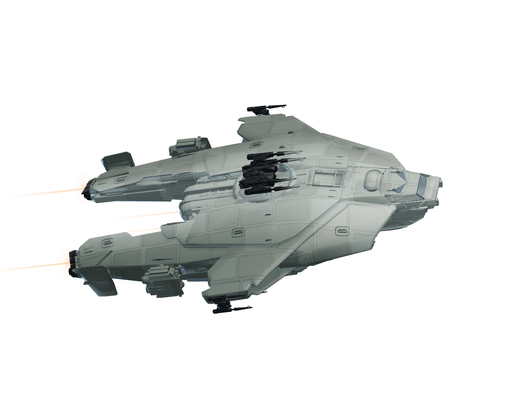
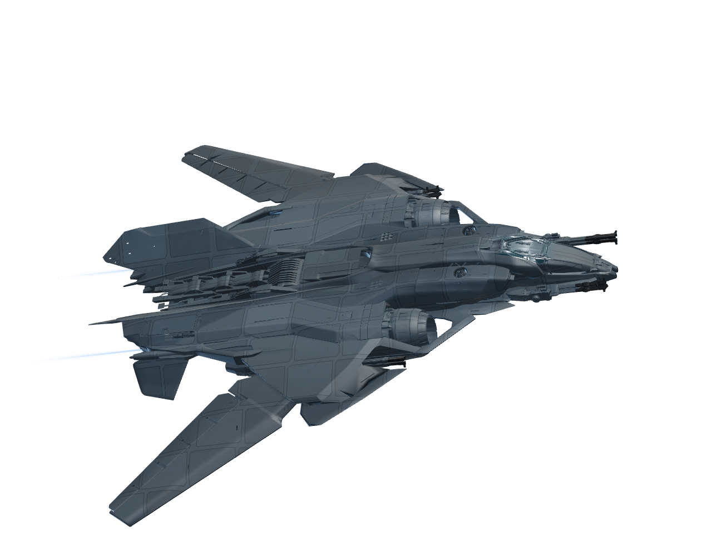

Rendered from the same Gladius, Paladin and Sabre meshes used in the updated arena.
AEGIS DYNAMICSGLADIUS

!ship interceptor
ANVIL AEROSPACEPALADIN

!ship sentinel
AEGIS DYNAMICSSABRE

!ship phantom
RSI holoviewer geometry with Voyager materials and effects. These are website-viewer meshes, not full in-game assets or original game textures. The overlay background remains transparent.
Model sources and attribution